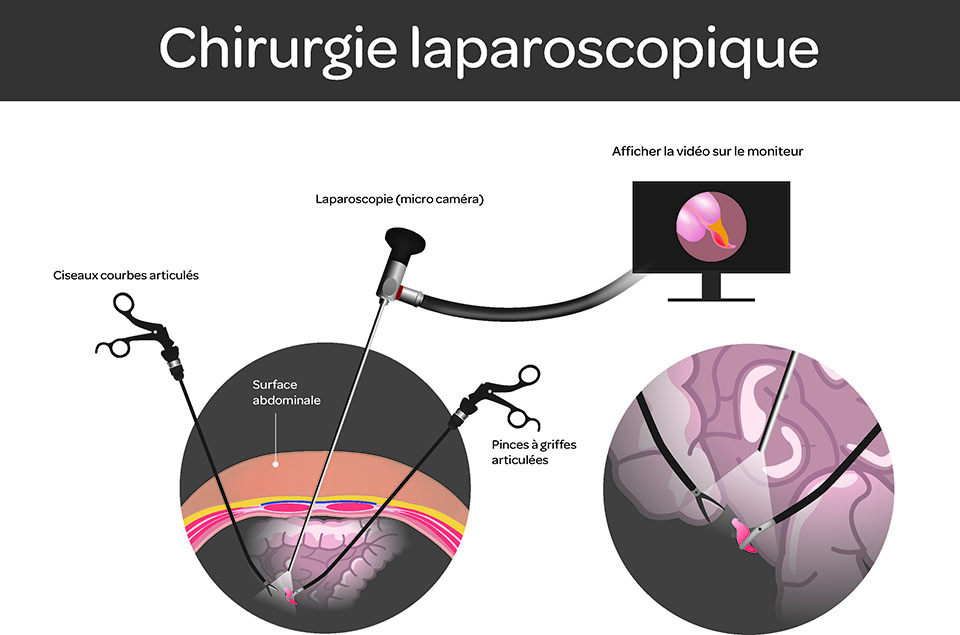

Chirurgie Laparoscopique
La cœlioscopie (appelée également laparoscopie) est une technique chirurgicale qui permet, par une petite ouverture de la paroi de l' abdomen , d'observer l'intérieur de la cavité abdominale ou pelvienne et d'intervenir sur les organes. Elle peut avoir deux objectifs diagnostique et thérapeutique.
Échographie Gynécologique
Les échographies gynécologiques permettent, en dehors de la grossesse, d'explorer l'appareil génital en analysant l'utérus et ovaires. L'examen peut être réalisé par voie abdominale ou par voie vaginale.
Échographie Obstétrique

Une échographie obstétricale est un examen d'imagerie médicale qui consiste à étudier à l'aide d'ultrasons le développement du fœtus et la position du placenta durant la grossesse. Cette échographie permet ainsi de visualiser en temps réel les mouvements du bébé pour s'assurer que tout va bien